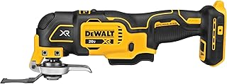

Best Oscillating Multi-Tool of 2026
What an Oscillating Tool Actually Does
Every other saw cuts in a straight line from the edge. An oscillating tool vibrates its blade through a tiny arc — about 3 degrees — at up to 20,000 oscillations per minute. The blade doesn't spin. It doesn't reciprocate like a sawza

DeWalt DCS356B 20V MAX Brushless Oscillating Multi-Tool
0–20,000 OPM · Tool-free blade change · LED work light · 2.3 lbs
Check price on Amazon →What we like
- Tool-free blade change lever — push, drop the old blade, insert new blade, release. 3 seconds
- 3° oscillation angle gives the best balance of cut speed and control. Wider angles cut faster but are harder to control. Narrower angles are slower. DeWalt got this exactly right
- Variable speed trigger plus a speed dial — set the max on the dial, modulate with the trigger
- At 2.3 lbs it's the lightest tool here. After 20 minutes of one-handed overhead cutting, this matters more than any spec
- The LED lights up the cut line — oscillating blades are wide, you often can't see what you're cutting around the blade. The light solves this
What we don't like
- Tool only — no case, no blades, no battery. Budget $25 for a blade starter kit
- 3° angle is slower than Rockwell's 5° for heavy scraping. For cutting it's better. For scraping, it takes patience
- Vibration is noticeable after 30+ minutes of continuous use — normal for the category
Best Budget: WEN 23103
The WEN 23103 costs $29. That's less than a pack of three premium blades. It's corded, the blade change requires a hex key (keep it taped to the cord or you'll lose it within a week), and the motor isn't brushless. But it oscillates at 20,000 OPM, it makes flush cuts in trim and drywall, and it costs less than renting the DeWalt for three days. For a homeowner who needs an oscillating tool for one flooring project and maybe an annual drywall repair, this is the right tool at the right price.
Best Corded: Rockwell Sonicrafter F80
Rockwell invented the oscillating tool category. The Sonicrafter F80 refines their original design with a 4.0-amp motor and a 5° oscillation angle — wider than DeWalt's 3°, which makes it faster at scraping and heavy material removal but slightly less precise for fine cutting. If your primary use is removing old caulk, scraping adhesives, or sanding, the corded Rockwell's constant power and wider angle are advantages. If you're cutting precise openings in finished surfaces, stick with the DeWalt.
Blades: The Real Cost of Ownership
Oscillating tool blades wear out. Fast. The teeth dull, the blade heats up, and you find yourself leaning into the tool to get it to cut — which doesn't work on an oscillator. Budget blades are a false economy: a $3 blade that lasts three cuts vs a $7 blade that lasts 30. Here's what you need in a starter kit:
| Blade | Use | Recommendation |
|---|---|---|
| Bi-metal wood/drywall (1-3/8") | Flush cutting trim, drywall cutouts | DeWalt DWA4214 |
| Bi-metal wood+metal (1-3/8") | Cutting nails embedded in wood, pipe | DeWalt DWA4213 |
| Carbide grit grout removal | Removing grout between tiles | Bosch OSC312F |
| Rigid scraper blade | Removing caulk, adhesive, vinyl flooring | DeWalt DWA4221 |
| Sanding pad + 10-grit assortment | Corner sanding, detail work | DeWalt DWA4200 |
Budget $25–35 for a blade assortment on day one. The blades that come with most oscillating tools are single-use — not because they're bad, but because the first thing you'll cut through is a nail you didn't know was there, and then the teeth are gone.
The Bottom Line
The DeWalt DCS356B at $129 is the best oscillating tool on the market — tool-free blade change, perfect 3° oscillation angle, brushless motor. Budget a blade starter kit. If $129 is too much for a tool you'll use a few times a year, the WEN 23103 at $29 does the same jobs — slower, but for $100 less. For heavy scraping and sanding: Rockwell F80 — corded power and a wider oscillation angle.